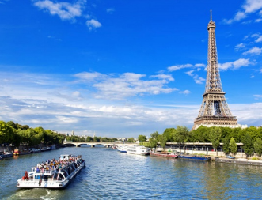

Exploring France
The majority or world traveler sign up for tours that take them to some of the
top tourist destinations in the world. They spend a very short time in each destination,
and get to see the important sites. But they never really get the opportunity to immerse
themselves in the culture, and explore the country in depth.
My goal is to visit and experience every region in France. Understand the history and
culture of France in detail.
France is renowned for its diverse regions, each boasting unique landscapes,
cultures, cuisines, and histories. And I plan on visiting and experiencing it all.
Here's a brief overview of some of the distinct regions that I have explored and what
I believe sets them apart.

Ile-de-France
Home to the capital city, Paris, this region is the political and cultural
heart of France. Paris is famed for its iconic landmarks such as the Eiffel Tower,
Louvre Museum, and Notre-Dame Cathedral.
Île-de-France is characterized by
its bustling urban life, haute cuisine, fashion, and world-class museums.
Normandie
Famous for the D-Day landing beaches and picturesque towns like Honfleur
and Rouen, Normandy offers a blend of history, scenic beauty, and culinary delights.
Its cuisine highlights include Camembert cheese, apple-based dishes, and seafood
delicacies like moules marinières (mussels) and sole meunière.
Occitanie
Stretching from the Pyrenees to the Mediterranean coast, Occitanie boasts
diverse landscapes ranging from mountains to vineyards and sandy beaches.
The region's rich history is reflected in its medieval towns, ancient Roman monuments,
and Cathar castles.
Alsace
Situated in the northeast, Alsace borders Germany and Switzerland,
reflecting a unique blend of French and German influences in its culture,
architecture, and cuisine.
The region is renowned for its picturesque
half-timbered villages, white wines like Riesling and Gewürztraminer,
and hearty dishes such as choucroute garnie (sauerkraut with sausages and meats).
The Loire Valley
The Loire Valley, located in central France, is renowned for its picturesque
landscapes, historic châteaux, and vibrant cultural heritage.
The region is home
to over 300 châteaux, including iconic landmarks such as Château de Chambord,
Château de Chenonceau, and Château de Villandry, showcasing a rich architectural
legacy spanning the Renaissance to the Gothic era.
Provence-Alpes-Côte d'Azur
Situated in the southeast, this region encompasses the French Riviera,
with its glamorous cities like Nice, Cannes, and Saint-Tropez.
Provence is known for its stunning Mediterranean coastline, picturesque hilltop villages,
lavender fields, and olive groves. Its cuisine is influenced by fresh seafood,
aromatic herbs, and olive oil..